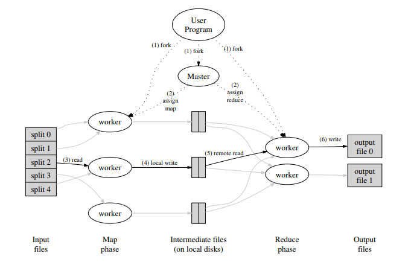
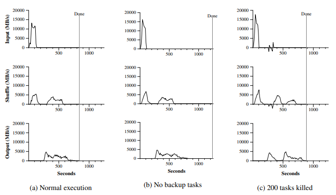

MapReduce Explained
#1. What is MapReduce?
MapReduce is a programming model and an associated implementation for processing and generating large datasets.
MapReduce was first popularized by Jeffrey Dean & Sanjay Ghemawat of Google in 2004. In their paper, they discussed Google's approach to collecting and analysing the website data for search optimizations.
MapReduce could be used to do operations like counting the number of occurences of words to sorting of data in the orders of 10s of terabytes!
#2. Core Principles
Given that the input file was often over 10 TB, any processing has to be distributed. Google wanted to make it easy to use for the application user and hence MapReduce had to be able to express the computation while hiding the messy details of distributed computing.
MapReduce must be able to scale horizontally in order to cope with the ever increase input sizes. In other words, throwing more servers at MapReduce must proportionally improve throughput.
Google realised that majority of the operations they needed to run on large datasets can be split into two steps.$$ map(key1, value1) \to list(key2, value2)$$ $$ reduce(key2, list(value2)) \to list(value2) $$
#3. Example for MapReduce
Consider the problem of counting the number of occurrences of each word in a large collection of documents. The user would write code similar to the following pseudo-code:
def map(key, value):
# key: document name
# value: document contents
for each word w in value:
EmitIntermediate(w, "1");
def reduce( key, values):
# key: a word
# values: a list of counts
int result = 0;
for each v in values:
result += ParseInt(v);
Emit(AsString(result));In this article, we will look at MapReduce in the context of this example.
#4. Execution Overview

The user defined the MapReduce functions and starts the job.
#4.1. Splitting of input files
First the input is split into M chucks of say around 16 MB. It then starts up many copies of the program on a cluster of machines, i.e, initializes and starts the nodes.
#4.2. Master Node
One of the nodes in the cluster will be assigned as the master node and rest will serve as worker nodes. The master node maintains the state of all the worker nodes and assigns a Map or Reduce task to idle worker nodes.
Reduce invocations are distributed by partitioning the intermediate key space into $R$ pieces using a function like $hash(key) \bmod R$.
#4.3. Map Phase
A worker node who has been assigned a Map task will read it's assigned input split. It parses the key-value pairs in it's split and applies the Map function. The intermediate key-value pairs produced by the Map function will be buffered in memory.
#4.4. Writing intermediate data
Periodically the intermediate keys in memory are written into local disk, partitioned into $R$ regions by the partitioning function.
The location of these buffered pairs on the local disk of the worker node is passed back to the master.
#4.5. Reading intermediate data
After the Map phase completes, the Reduce workers are notified of the relevant locations. The Reduce worker node uses RPC to read the buffered data from the local disks and sorts it by the intermediate keys so that all occurences of the same key are grouped together.
#4.6. Reduce Phase
Once the sorted intermediate key-value pairs are available at the Reduce worker node, it applies the Reduce function on all the key-value pairs and stores the output in the final output file.
#5. Concerns with MapReduce
In order to extract the best throughput out of MapReduce few important factors need to be kept in mind. Every distributed system has its own inadequacies and MapReduce is no different.
#5.1. Fault Tolerance
The larger the node cluster, the larger the chances of failure. The master node periodically pings the worker nodes to check the health.
In the event a worker node fails, any tasks completed on the failed node will be re-executed since the output is stored on local disk.
All the Reduce worker nodes are notified to read from the active worker node instead of the failed worker node.
Though the master node can be checkpointed and restarted in case of failure, Google's MapReduce implementation fails if the master node fails which is unlikely.
#5.2. Network Bandwidth
In 2004, network bandwidth was relatively a scarce resource. Bandwidth can be conserved by taking advantage of the fact that the input data residing on GFS is stored on the local disks that make up the cluster for MapReduce.
GFS divides files into 64MB chunks and creates about 3 copies across different machines. The master node takes this information to schedule map tasks to maximize local reads instead of remote reads.
Reduce invocations are distributed by partitioning the intermediate key space into $R$ pieces using a function like $hash(key) \bmod R$.
#5.3. Task Granularity
We subdivide the map phase into $M$ pieces and reduce phase into $R$ pieces. Ideally $M$ and $R$ must be much larger than the number of machines in the cluster.
Also there are practical bounds on how large $M$ and $R$ can be. Master node make $O(M+N)$ scheduling decisions and keeps $O(MN)$ state in memory.
#5.4. Backup Tasks
One of the common causes that lengthens the total time taken for a MapReduce operation is a “straggler”: a machine that takes an unusually long time to complete one of the last few map or reduce tasks in the computation.
When a MapReduce operation is close to completion, the master schedules backup executions of the remaining in-progress tasks. The task is marked as completed whenever either the primary or the backup execution completes.
#6. Performance Metrics

The figure illustrated the data transfer rates over time for different executions of the sort program. The sort program sorts $10^{10}$ 100-byte records (approximately 1 terabyte of data).
#6.1. Normal Execution
Figure(a) shows the progress of a normal execution of the sort program. The top-left graph shows the rate at which input is read. The rate peaks at about 13 GB/s and dies off fairly quickly since all map tasks finish before 200 seconds have elapsed.
The middle-left graph shows the rate at which data is sent over the network from the map tasks to the reduce tasks. This shuffling starts as soon as the first map task completes
The first hump in the graph is for the first batch of approximately 1700 reduce tasks. Roughly 300 seconds into the computation, some of these first batch of reduce tasks finish and it starts shuffling data for the remaining reduce tasks.
The bottom-left graph shows the rate at which sorted data is written to the final output files by the reduce tasks. Including startup overhead, the entire computation takes 891 seconds.
The input rate is higher than the shuffle rate and the output rate because of our locality optimization. The shuffle rate is higher than the output rate because the output phase writes two copies of the sorted data for replication & availablity.
#6.2. No Backup Tasks
Figure(b) shows an execution of the sort program with backup tasks disabled. The execution flow is similar to that shown in Figure(a), except that there is a very long tail where hardly any write activity occurs.
The last few stragglers don’t finish until 300 seconds later. The entire computation takes 1283 seconds, an increase of 44% in elapsed time.
#6.3. 200 Tasks Killed
Figure(c) shows an execution of the sort program where they intentionally killed 200 out of 1746 worker processes several minutes into the computation.
The worker deaths show up as a negative input rate since some previously completed map work disappears and needs to be redone.
The entire computation finishes in 933 seconds including startup overhead (just an increase of 5% over the normal execution time).
#7. Other applications of MapReduce
It has been used across a wide range of domains within Google, including:
- large-scale machine learning problems
- clustering problems for the Google News and Froogle products
- extraction of data used to produce reports of popular queries (e.g. Google Zeitgeist)
- extraction of properties of web pages for new experiments and products (e.g. extraction of geographical locations from a large corpus of web pages for localized search)
- large-scale graph computations
#8. Resources

About The Author
Allen Philip is a passionate software engineer with over 6 years of experience dunking coffee, starring at screen, pulling out hair strands and changing the world one commit at a time.